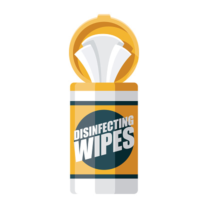
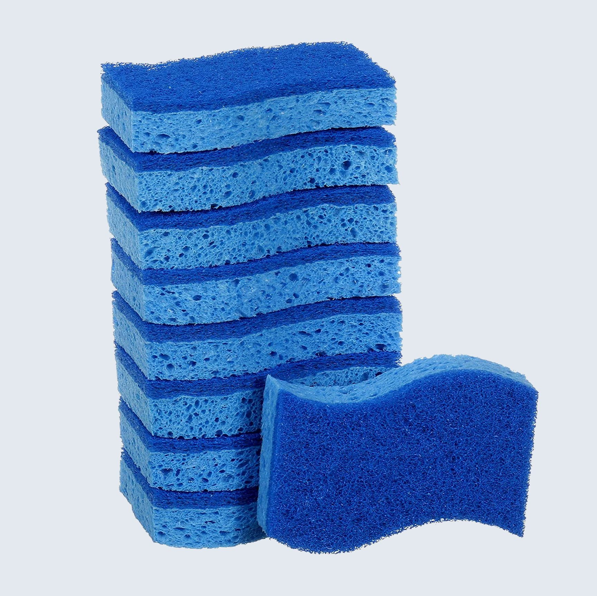
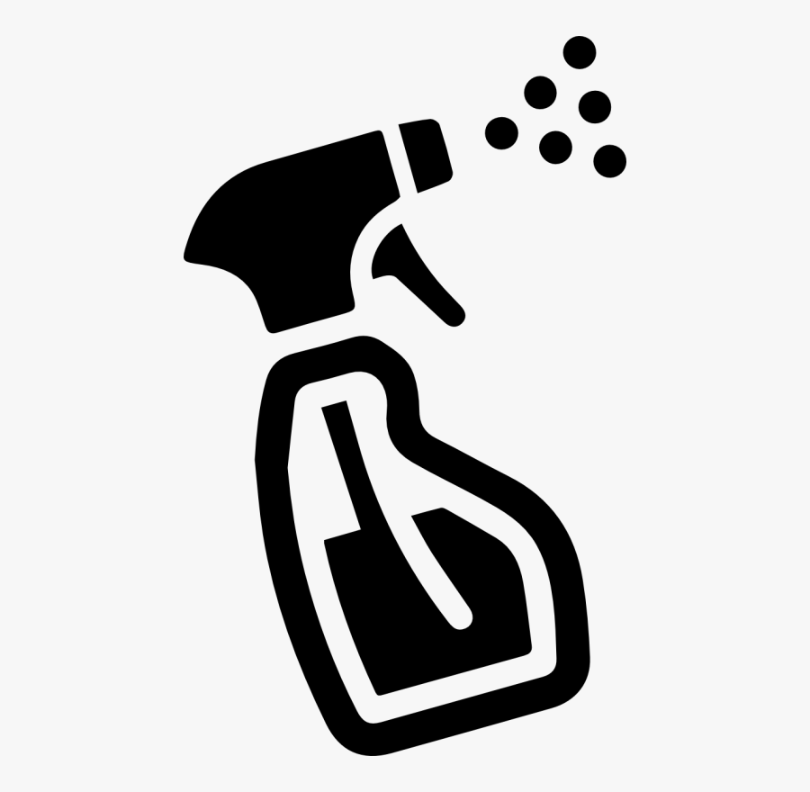
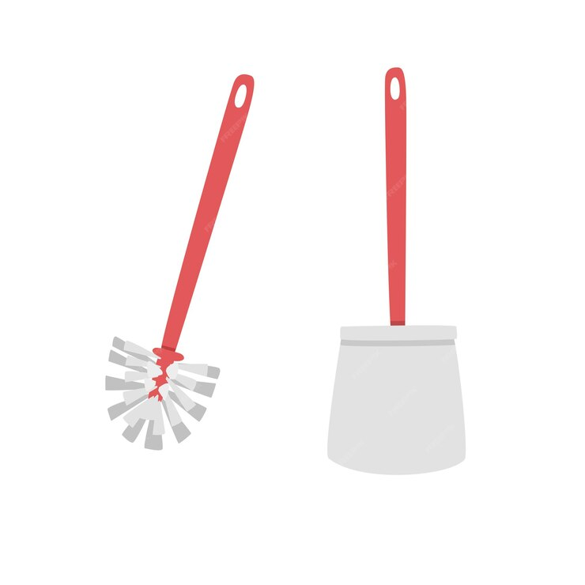

~ A short and simple guide to help you keep your restroom(s) clean ~
Introduction
So we meet again, friends. Good day! I hope you've been having a great week. Though having a great
week means regular bathroom breaks... and regular bathroom breaks calls for regular cleaning!
It may sound or look complicated at first, but cleaning a restroom is actually easier and quicker
than you may think! We can't clean without cleaning supplies, however, so we need to review our
needed materials.
Materials
Here is a list of all the materials that I personally use to clean our restrooms. If you already know
which brands you trust and often buy from, you can use those instead. Always make
sure to check the ingredients of cleaning supplies to make sure you're not using something
you may be allergic/sensitive to!
Ajax Powder Cleaner
Dish Sponge
Disinfecting Wipes
Liquid Toilet Cleaner
Toilet Scrub
Paper Towels
Windex Glass Cleaner




Cleaning a Tub
When I clean the whole restroom, I usually start with the tub first.
Materials Needed
Ajax Powder Cleaner
Dish Sponge
Disinfecting Wipes (optional)
Step-by-Step Instructions
Wet the tub you plan to clean with clean water.
Sprinkle a small amount of the Ajax Powder Cleaner in the inside of the tub (remember:
a little Ajax goes a long way! Plus it's expensive so you shouldn't use more than needed).
Using the dish sponge, scrub the inside of the tub all over, exerting more force on the badly
stained areas. Make sure to scrub near the drain.
(You can use either a sponge or a disinfecting wipe for this step, whichever is easier for you)
If the wall of the tub is tiled, scrub the grout to remove the staining. If you're using Ajax,
make sure not to use too much of it, for Ajax contains bleach which could potentially ruin
the caulking of the wall.
When Ajax dries, it causes the surface it was applied on to become quite dull. Make sure to
rinse your tub well to keep it looking shiny!
Congratulations! You just cleaned your tub! You can now shower with pride.
Cleaning a Toilet
Oh... gross. Cleaning a toilet definitely isn't the most desirable task, but it must be done.
Materials Needed
Liquid Toilet Cleaner
Toilet Scrub
Disinfecting Wipes
Paper Towels
Step-by-Step Instructions
I'm not completely sure how necessary this step is, but I and everyone else (who actually cleans)
in my family does it, so I'll continue the tradition. Flush the toilet so that the inside of the
toilet is wet.
Once the toilet stops streaming water into itself, pour in a bit of the liquid toilet cleaner
along the rim of the toilet bowl.
Wait for a small amount of time, like maybe 5 minutes or so (or however long the directions on
the bottle say).
Wielding your sword of humbleness (your toilet scrub), scrub the inside of the toilet bowl, paying
extra attention to the well defined stains.
Once you have successfully scrubbed out the stains, you can put your sword (toilet scrub)
back into its sheath (toilet scrub holder) and sit back and admire your work. But you're not done, no.
Once again, depending on what the liquid toilet cleaner bottle says, you might need to flush the toilet
right away or wait a few more minutes.
You're almost done, don't worry. Grab a disinfecting wipe and begin wiping all around the outside
of the toilet. Always start from the top and work your way to the bottom (since the bottom will
probably be more stained than the top).
When you've finished wiping the toilet, grab a paper towel and dry the toilet.
Yay, you! You've cleaned your toilet! The next two things aren't half as gross as cleaning a
toilet (well, maybe it is depending on how bad your restroom is).
Cleaning a Sink
This is incredibly easy, relax! (No seriously, it is.)
Materials Needed
Disinfecting Wipes
Ajax (optional)
Paper Towels
Step-by-Step Instructions
Grab a disinfecting wipe and wipe down the sink. Be sure to wipe the sink faucet!
Depending on how dirty the inside of the sink is, you may want to use a sponge and a
teensy bit of Ajax to clean the inside of it.
Dry the sink using a paper towel.
I really wasn't lying when I told you it was easy.
Cleaning a Mirror
You're almost done, mate! Keep going!
Materials Needed
Windex Glass Cleaner
Paper Towels
Step-by-Step Instructions
Spray some Windex on the glass and immediately wipe it off with a paper towel.
Continue this for the entire mirror, until you don't see any more spots.
Tip! If you notice that the Windex leaves cloudy streaks on the mirror, use a
dry paper towel and a lot of elbow grease to rub it off.
Conclusion
As you can see, cleaning a restroom really isn't all that hard. I hope that you found
this short guide helpful, and I hope you have a great week!